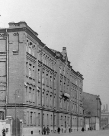
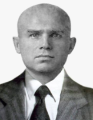
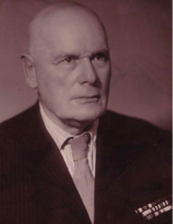

История РТУ МИРЭА
История РТУ МИРЭА неотделима как от светлых, так и от драматических страниц истории нашего Отечества. Время учреждения Университета пришлось на период залечивания ран, нанесенных стране и ее народу Второй мировой войной. 28 мая 1947 года за подписью зам. председателя Совета Министров СССР В.М. Молотова вышло распоряжение Совмина СССР о преобразовании Заочного института усовершенствования инженерно-технических работников Министерства электростанций во Всесоюзный заочный энергетический институт подготовки и усовершенствования инженеров (ВЗЭИ) с передачей его в ведение Министерства высшего образования и среднего специального образования СССР. Для многих тысяч вчерашних фронтовиков и тружеников тыла заочное образование было в то время единственно возможным способом приобрести новую специальность или повысить свою квалификацию. В развитии такой формы образования было заинтересовано и государство, потерявшее в годы Великой Отечественной войны миллионы граждан трудоспособного возраста и потому ценившее каждую пару рук и «светлую» голову людей, занятых возрождением страны непосредственно на производстве.
ВЗЭИ был определен головным вузом в системе заочного образования по энергетическим и радиотехническим специальностям. К тому же с самого начала предполагалось, что институт станет и самым крупным среди заочных образовательных учреждений страны, чему должно было способствовать наличие его филиалов в шести регионах СССР. Кадры энергетиков для Северо-Западных областей РСФСР и Прибалтийских республик готовил Ленинградский филиал, для Украины и Молдавии – Киевский, для республик Закавказья – Бакинский, республик Средней Азии – Ташкентский, для Уральского региона – Свердловский, для Сибири и Дальнего Востока – Новосибирский филиал.
«Родовым гнездом» нового вуза стали три помещения (общей площадью 67 кв. м) в здании Московского энергетического техникума на Кропоткинской (ныне Пречистенской) набережной, 11. В течение нескольких месяцев в нем находилась вся учебно-производственная база ВЗЭИ, а в дальнейшем, вплоть до окончательного обустройства вуза в одном из корпусов Московского энергетического института им. В.М. Молотова (конец 1949 года), в техникуме размещались учебно-консультационный пункт, кабинет марксизма-ленинизма, центральная библиотека и читальня. Работа филиалов налаживалась в арендуемых помещениях.
В условиях неизбежных для первых послевоенных лет трудностей становления нового учебного заведения его преподаватели и сотрудники под руководством первого директора вуза В.К. Ганина
Ганин Василий Кондратьевич, июль 1947 г. – апрель 1948 г.
Родился 3 марта 1903 года. Окончил Коммунистический университет Сибири (1925 г.), МЭИ (1932 г.), два курса Экономического института красной профессуры (1937 г.). Кандидат технических наук, доцент по кафедре общей и теоретической теплотехники.
делали все возможное для выведения института на тот высокий уровень, который был задан правительственным распоряжением и другими документами директивных органов.
Уже на начало декабря в ВЗЭИ было более 1100 студентов, распределенных по шести факультетам (с 11 специальностями), и более 3600 слушателей единственного в технических вузах страны факультета усовершенствования дипломированных инженеров (ФУДИ). Студенты в возрасте до 20 лет составляли только 9 процентов студенческого контингента, наибольшая же доля (66 процентов) приходилась на людей 20-30 летнего возраста. Интересен и тот факт, что к концу первого учебного года около 40 процентов студентов вуза (425 человек) входили в состав радиотехнического факультета и в дальнейшем популярность среди абитуриентов специальности «радиотехника» постоянно возрастала.
В числе преподавателей вуза находилось 19 докторов наук и профессоров, 30 кандидатов наук и доцентов. Уже в период становления вуза на его кафедрах работало до 10 лауреатов высшей в то время награды в области науки и техники – Сталинской премии. С декабря 1947 года кафедру электрофизики возглавлял выдающийся ученый, создатель отечественной школы физической и теоретической акустики, член-корреспондент (в дальнейшем – действительный член) АН СССР Н.Н. Андреев (ныне его имя носит Акустический институт РАН).
1 сентября 1947 года был объявлен прием в аспирантуру по всем специальностям и кафедрам института. Ровно через год к учебной работе приступили 34 человека, а уже в 1950 году состоялась первая защита диссертации аспирантом Б.Н. Тардовым, впоследствии ставшим крупным специалистом в области электроматериаловедения.
25 ноября 1947 года состоялось первое заседание Совета ВЗЭИ, в январе следующего года был утвержден Устав института, формировались его библиотечные фонды, несколько позднее создан редакционно-издательский отдел ВЗЭИ и утвержден редакционный совет при его директоре, что позволило развернуть работу по подготовке и рассылке в вузы энергетического профиля учебно-методической литературы.
В октябре 1947 года в институте были созданы первичные организации – профсоюзная (первый председатель месткома – к.т.н., доцент, зав. кафедрой теории механизмов и машин и деталей машин Н.Н. Калитвянский) и партийная (секретарь партийного бюро – старший преподаватель кафедры начертательной геометрии и графики, участник Великой Отечественной войны Г.Ф. Фокин).
В мае 1948 года к обязанностям директора ВЗЭИ приступил А.Л. Банквицер
Банквицер Ахилл Львович, май 1948 г. – ноябрь 1950 г.
Родился 27 марта 1892 года. Окончил Киевский коммерческий институт (1916 г.), аспирантуру физико-химического института им. Л.Я. Карпова (1935 г.). Участник Гражданской советско-финской и Великой Отечественной войн.
На период его руководства пришелся первый выпуск специалистов из числа лиц, пришедших в институт на старшие курсы: в июле 9 человек получили дипломы инженеров, из них 4 – с отличием.
В мае того же года состоялось организационное собрание Научно-технического общества ВЗЭИ, временное руководство которым принял Н.Н. Андреев. НТО стало инициатором проведения первой научно-технической конференции ВЗЭИ (июнь 1950 г.). С докладами и сообщениями выступали не только преподаватели вуза и приглашенные специалисты, но и аспиранты, а также студенты института. К этому же времени относится получившее впоследствии широкий размах включение преподавательского состава (часто родственных кафедр) в решение конкретных задач народного хозяйства посредством заключения вузом договоров о содружестве с промышленными предприятиями и НИИ (Горьковским автомобильным заводом, НИИ Министерства авиационной промышленности и др.)
Рубеж 1940 – 1950 годов был отмечен и началом серьезных структурных преобразований ВЗЭИ: в августе 1949 года был ликвидирован один из факультетов института (гидроэнергетический), в сентябре 1950 года студенты и преподаватели Бакинского (кавказского) филиала были переведены на заочное отделение Азербайджанского индустриального института. Вместе с тем тогда же было положено начало созданию сети учебно-консультационных пунктов вуза – в конце 1949 года фактически начал функционировать его Московский УКП на базе МЭИ.